01 · 共研 / BUILD
把城市问题做成原型
沿线已经聚集公园、高校、科研园区、社区、轨道站点和商业生活。X京张把这条百年线路转化为公共创新基础设施：真实城市问题从横向接入，沿线完成共研、开放与使用，再把现场产生的新问题送回研发。
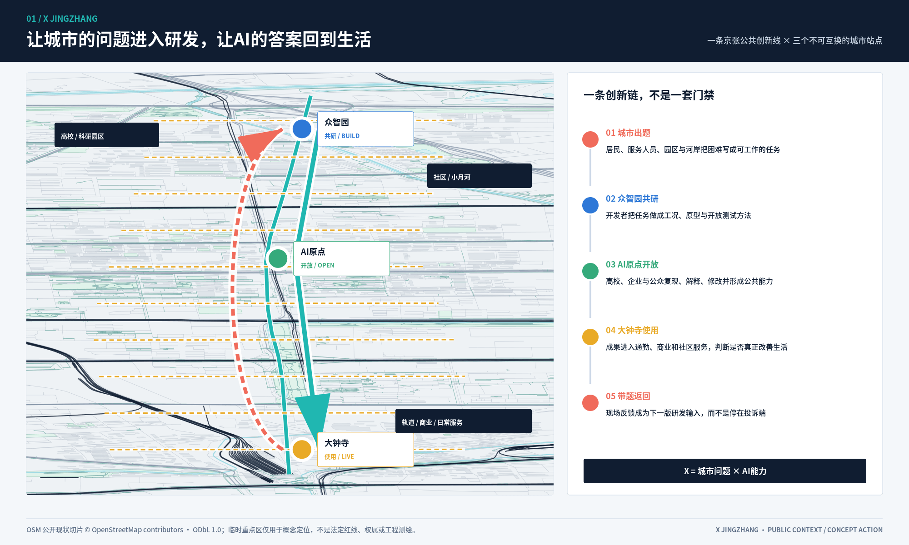
众智园做原型，AI原点开放能力，大钟寺让能力进入日常。TEST、RELEASE、USE仍然存在，但只是三站内部的安全底盘。
把城市问题做成原型

把原型变成公共能力
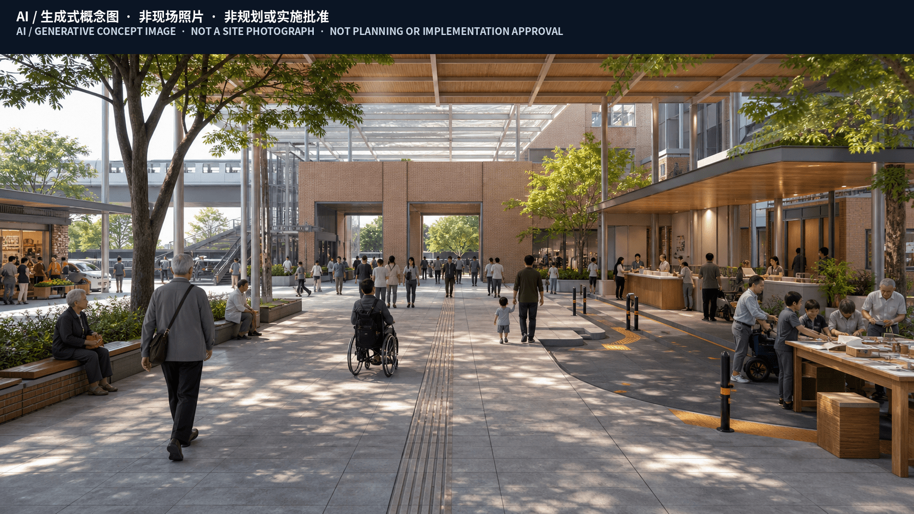
让公共能力进入真实生活
空间设计
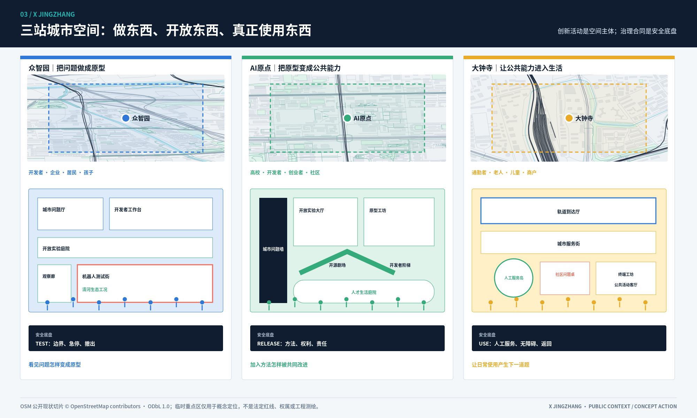
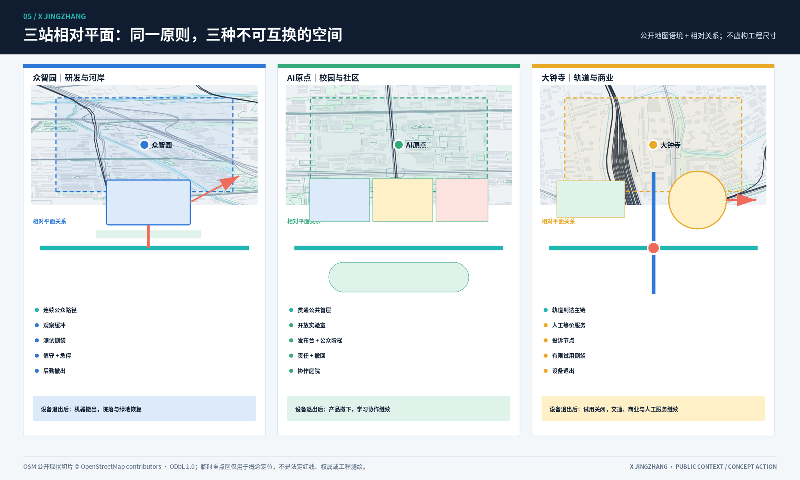
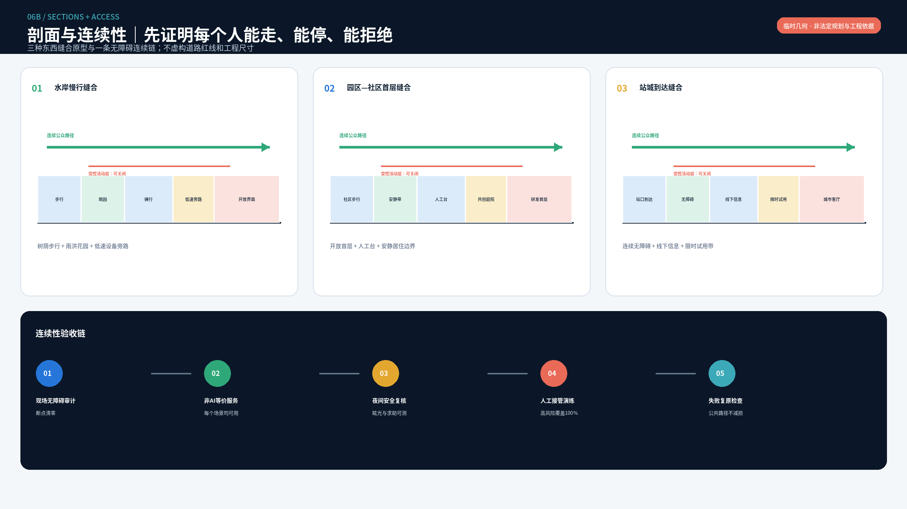
一个城市问题
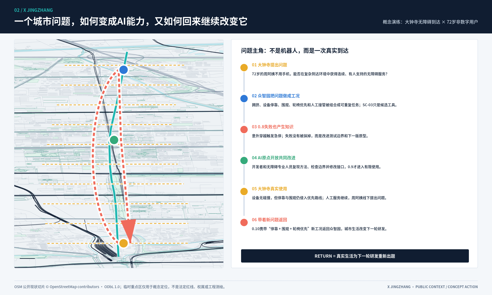

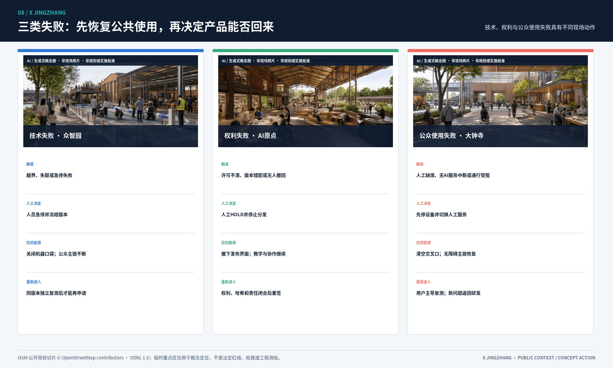
总体城市
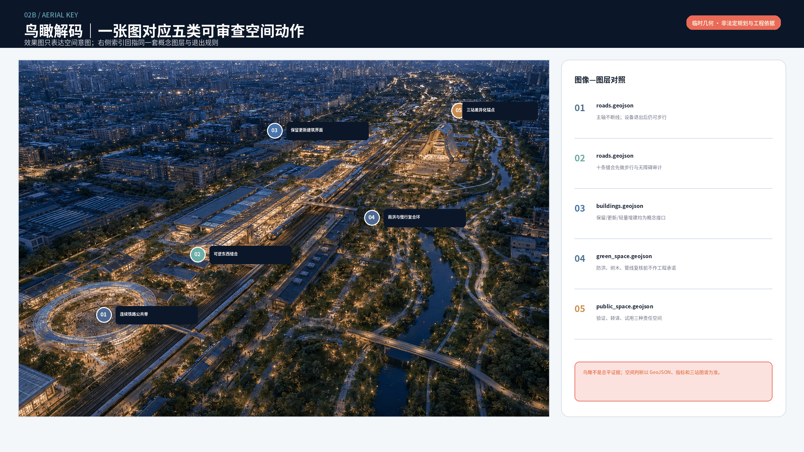
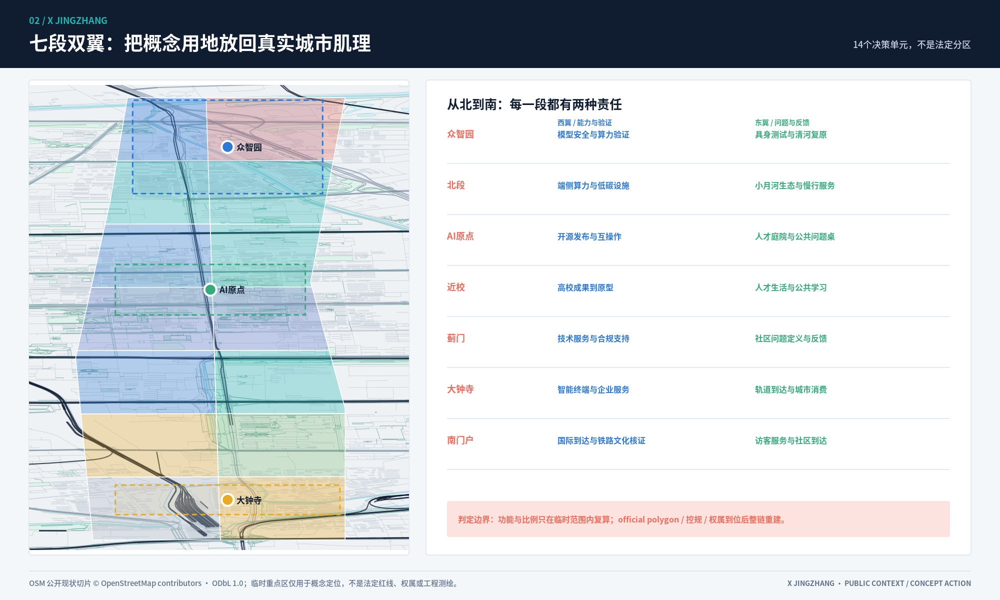
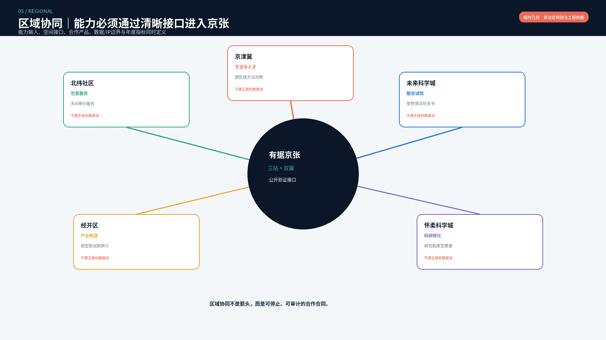
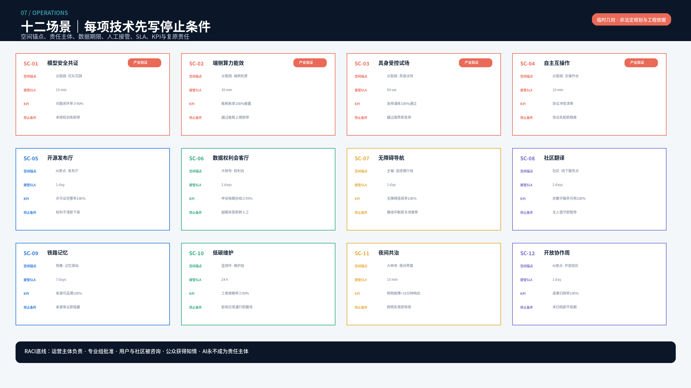
实施与运营
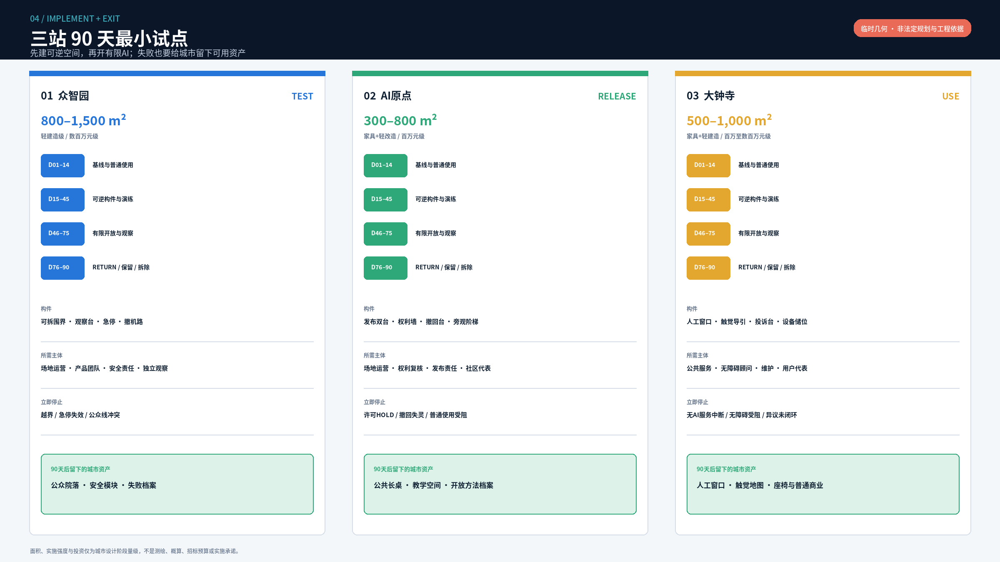

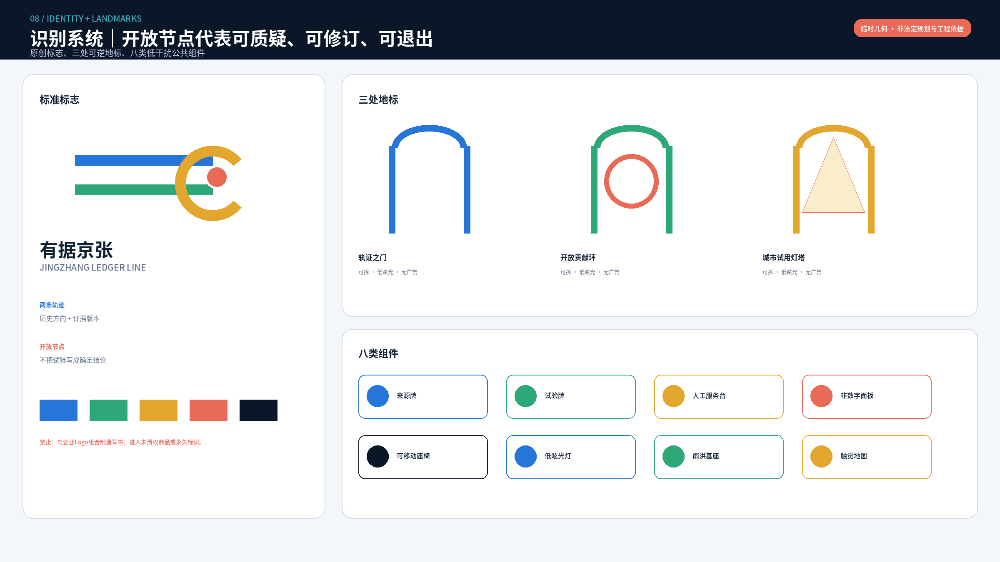
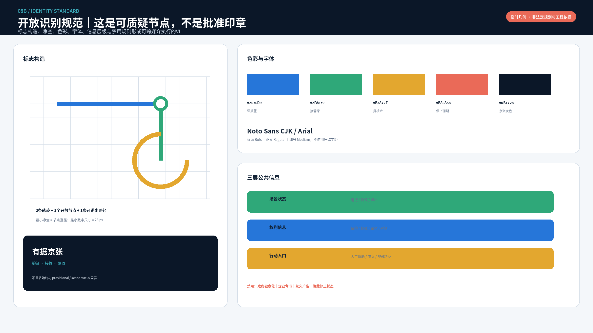
总体边界和三处重点区均为临时约束，仅用于概念关系、公开地图切片和包内复算。正式边界、控规、权属、现场尺寸、工程条件和运营主体到位后必须重建。
专业附录
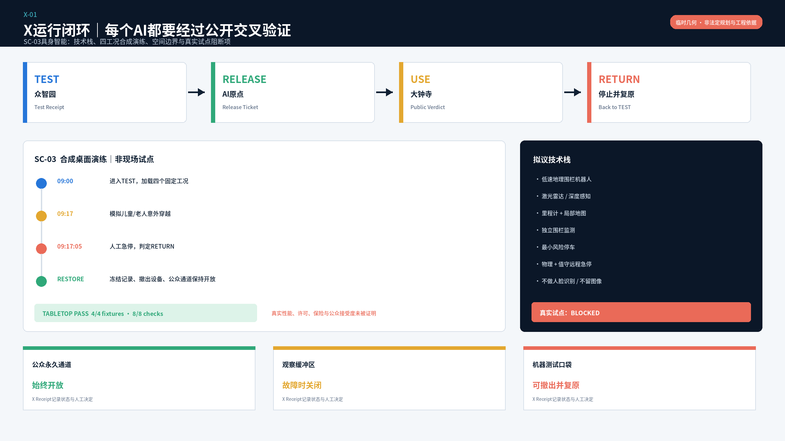

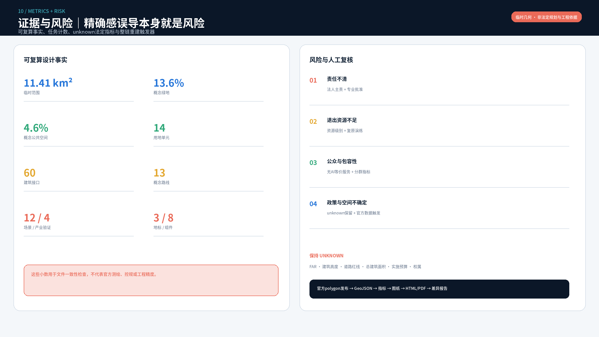